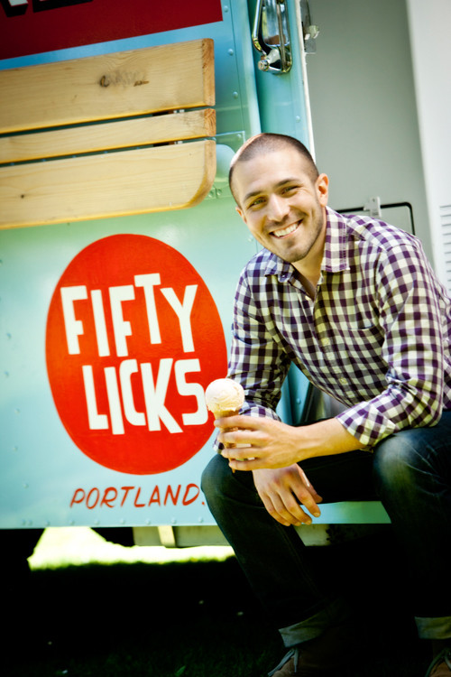

A Nerd, a Truck, and a Dream
Food science is super cool, you guys! Fifty Licks owner Chad Draizin loves food science. He is fascinated by the chemical cartwheels that happen when beer is brewed, bread is baked, and ice cream is churned (or spun, as they say in the biz).
His first love, brewing beer, is what brought him to Portland for an internship at Portland Brewing. He fell in love with the rain, but he couldn't find a place to get a good scoop of ice cream. Or a good cup of Cuban coffee. So he fixed up a cheerful blue truck, and started experimenting. His mission? Ice cream made from scratch, with local ingredients and tons of cage-free egg yolks for a luscious, rich texture.
Featured On
- Thrillist
- Unique Sweets
- Willamette Week
- Right at the Fork
- Eater PDX
- Serious Eats